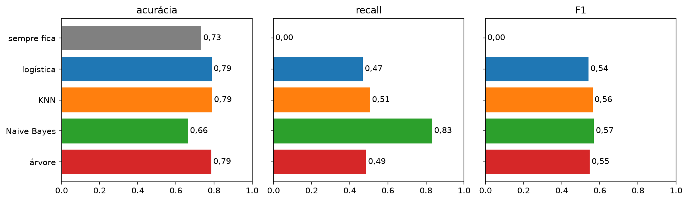

Quatro jeitos de responder “sai ou fica”, no mesmo problema, comparados no mesmo teste
Aula ML 0315/10Algoritmos de classificaçãoaula gravada
Use →← · M índice · P PDF · F tela cheia
Lembrando a aula 1
Classificar = escolher uma categoria
Classificação
A resposta é uma opção de uma lista, não um número. Com os pinguins, a lista era Adelie, Chinstrap ou Gentoo.
pergunta
resposta
tipo
Qual é a espécie do pinguim? (aula 1)
1 de 3 opções
classificação
Quantos litros de cerveja amanhã? (aula 2)
um número
regressão
Este cliente vai cancelar? (hoje)
sim ou não
classificação
Na aula 1 usamos um algoritmo, a regressão logística. Existem vários. Hoje: quatro, cada um com um jeito diferente de decidir.
cadernoTelco Customer Churn · uma linha = um cliente
O caso: quem vai cancelar?
7.032 clientesdepois de tirar 11 linhas com o total pago vazio.
4 colunas de entradameses de casa, conta do mês, total já pago, tipo de contrato (mensal, 1 ano, 2 anos).
26,6% saíram1 em cada 4. Quem sai é minoria.
1
Treino: 5.274 clientes. Teste: 1.758, que nenhum modelo vê no treino. A mesma % de quem sai dos dois lados.
2
O mesmo preparo para os 4: o contrato vira 3 colunas de 0 e 1, e as numéricas vão para a mesma escala.
Por que a escala? KNN mede distância e a logística soma pesos: sem escala, o total pago (milhares de US$) abafaria os meses de casa (dezenas).
cadernoAlgoritmo 1 de 4 · o da aula 1
Regressão logística
A ideia
Soma peso × coluna (o score) e transforma essa soma numa probabilidade entre 0 e 1.
cliente 1572 meses · US$ 95,65/mês contrato mensal
→
score 0,95soma de peso × coluna
→
0,72probabilidade de sair
→
“sai”0,72 ≥ 0,5
Ponto fortecada coluna tem um peso que dá para ler: “contrato mensal empurra para sair”. Rápida.
Ponto fracocada coluna só empurra sempre para o mesmo lado. Não monta regras do tipo “se isto e aquilo”.
cadernoAlgoritmo 2 de 4 · k vizinhos mais próximos
KNN
A ideia
Procura os 5 clientes do treino mais parecidos e segue a maioria deles.
os 5 vizinhos do cliente 157
meses
conta do mês
contrato
saiu?
vizinho 1
2
US$ 95,50
mensal
não
vizinho 2
2
US$ 96,00
mensal
sim
vizinho 3
2
US$ 95,15
mensal
sim
vizinho 4
2
US$ 94,95
mensal
sim
vizinho 5
2
US$ 94,20
mensal
sim
4 de 5 saíram → probabilidade 0,80 → “sai”
Ponto fortefácil de entender: “clientes parecidos fazem coisas parecidas”. Não precisa de fórmula.
Ponto fracocompara com todo o treino a cada pergunta (lento com muitos dados) e depende da escala.
cadernoAlgoritmo 3 de 4 · GaussianNB
Naive Bayes
A ideia
Compara o cliente com o perfil de quem sai e o de quem fica, uma coluna por vez, e junta as pistas.
média no treino
meses de casa
conta do mês
total já pago
quem fica
37,6
US$ 61,60
US$ 2.556,85
quem sai
17,8
US$ 74,12
US$ 1.508,23
cliente 157
2
US$ 95,65
US$ 167,30
Todas as pistas apontam para “sai” → probabilidade 0,98 → “sai”
Ponto fortemuito rápido e funciona com pouco dado.
Ponto fraco“naive” = ingênuo: trata cada coluna como pista separada. Meses e total pago andam juntos, então a mesma pista conta duas vezes e ele fica confiante demais.
cadernoAlgoritmo 4 de 4 · no máximo 4 perguntas
Árvore de decisão
A ideia
Faz perguntas de sim ou não, uma depois da outra, até chegar numa resposta. As perguntas saem do treino.
1
Contrato mensal? sim
2
Conta do mês acima de US$ 68,72? sim (US$ 95,65)
3
Até 15,5 meses de casa? sim (2 meses)
4
Total pago acima de US$ 118,10? sim (US$ 167,30) → grupo de 630 clientes do treino, 61% saíram → probabilidade 0,61 → “sai”
Ponto forteas regras dão para ler e desenhar, como um fluxograma.
Ponto fracocom muitas perguntas, decora o treino. Por isso limitamos a 4. Árvores e florestas: aula 4, 22/10.
cadernoMesmo treino, mesmo teste: 1.758 clientes, 467 saíram
Como comparar
A acurácia que mente: chutar “fica” para todo mundo, sem modelo nenhum, já acerta 0,734, porque 73,4% ficam. E não acha nenhum cliente que sai. Esse chute é o baseline: todo modelo precisa ganhar dele.
Precisãodos que eu disse que saem, quantos saíram mesmo? Alta = poucos alarmes à toa.
Recalldos que saíram, quantos eu peguei? Alto = pouca gente sai sem aviso.
F1junta precisão e recall num número só. Cai se um dos dois for baixo.
Todas as métricas olham para a classe que interessa: quem sai. Vão de 0 a 1, e maior é melhor.
cadernoOs 1.758 clientes do teste · em azul, o melhor de cada coluna
Os quatro, lado a lado
algoritmo
acurácia
precisão
recall
F1
chutar sempre “fica”
0,734
0
0
0
regressão logística
0,788
0,638
0,469
0,541
KNN (5 vizinhos)
0,790
0,629
0,507
0,562
Naive Bayes
0,664
0,432
0,833
0,569
árvore (4 perguntas)
0,786
0,625
0,486
0,547
Nenhum ganha em tudo. Logística, KNN e árvore quase empatam (acurácia perto de 0,79, pegam cerca de metade de quem sai). O Naive Bayes tem a pior acurácia, mas pega 83% de quem sai.
cadernoimg/g-comparacao.png · gerado no caderno
Acurácia, recall e F1

Pela acurácia, o Naive Bayes parece o pior. Pelo recall, é de longe o que mais encontra quem sai. A métrica escolhida muda o vencedor.
cadernoCliente 157 do teste · na vida real: saiu
O mesmo cliente, quatro caminhos
2 meses de casa · US$ 95,65/mês · US$ 167,30 no total · contrato mensal
algoritmo
como chegou lá
probabilidade de sair
resposta
regressão logística
score 0,95 → probabilidade
0,72
“sai” ✓
KNN
4 dos 5 vizinhos saíram
0,80
“sai” ✓
Naive Bayes
perfil parecido com quem sai, em todas as colunas
0,98
“sai” ✓
árvore
4 perguntas → grupo de 630, 61% saíram
0,61
“sai” ✓
Os quatro acertam este cliente, cada um por um caminho. A certeza muda: o Naive Bayes está quase certo (0,98), a árvore bem menos (0,61).
Depende de qual erro custa mais
Qual escolher?
Perder cliente custa mais
Ex.: a ligação é barata, e o cliente paga todo mês.
Olhe o recall.
Naive Bayes: pega 83 de cada 100 que saem.
Preço: só 43 de cada 100 alertas são de verdade.
Ligar à toa custa mais
Ex.: a oferta é um desconto grande.
Olhe a precisão.
Logística: 64 de cada 100 alertas são de verdade (KNN logo atrás).
Preço: pega só 47 de cada 100 que saem.
Ninguém definiu o custo? Use o F1: Naive Bayes (0,569) e KNN (0,562) quase empatados. Diferenças tão pequenas podem trocar de lugar com outro sorteio do teste.
Quatro algoritmos em uma linha cada
Resumo
algoritmo
como decide
bom em
cuidado com
regressão logística
soma peso × coluna → probabilidade
explicar os pesos
regras “isto e aquilo”
KNN
segue os 5 mais parecidos
ideia simples
escala, muitos dados
Naive Bayes
compara com o perfil de cada grupo
rapidez, pegar quem sai
confiança demais
árvore de decisão
perguntas de sim ou não
regras legíveis
decorar o treino
A regra: compare vários algoritmos no mesmo teste, sempre contra o chute “sempre fica”, e escolha pela métrica do erro que mais custa.
Caderno aula-ml-3.ipynb. Cada algoritmo virou uma run no MLflow, experimento classificadores. O comando para abrir a interface está no fim do caderno.
Exportar os slides para PDF
Destino: Salvar como PDF. Margens: nenhuma. Gráficos de segundo plano: ativado.